Breaking News
1.Intel CPU Supply Shortage Continues in Q4 (Market Realist 2019-09-26)
The CPU (central processing unit) supply market is heating up as we enter that time of year when seasonal demand picks up. CPUs power desktops, laptops, servers, and embedded devices. Intel (INTC) and Advanced Micro Devices (AMD) are the only two players with a material share in the CPU market. However, these two stocks are falling. Rumor has it that they are struggling to meet demand. And, Intel’s CPU supply shortage is not a new thing.
…………
AnandTech talked to Intel to get clarification on the CPU supply shortage rumor. In response, an Intel spokesperson said, “While our output capacity is increasing, we remain in a challenging supply-demand environment in our PC-centric business.” Also, the spokesperson said, “We are actively working to address this challenge, and we continue to prioritize available output toward the newest generation Intel Core i5, i7, and i9 products that support our customers’ high-growth segments.”
The statement confirmed the rumor that Intel is facing supply shortages. The firm confirmed that it will focus on the production of its newest tenth-generation PC CPUs.
…………
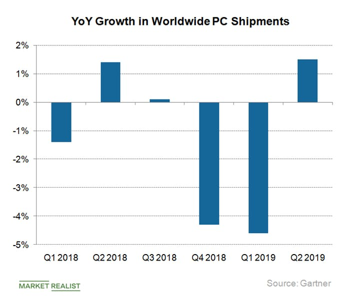
2.Over a year later, Intel‘s CPU shortage is expected to last “another quarter or two (TechSpot 2019-10-20)
Last April, Intel warned that its CPU shortage – which kicked off in August 2018 – would persist until Q3, with subsequent reports signaling that the 14nm CPU drought could ease up by June. Fast forward to Q4, over a year removed from the start of Intel’s supply woes, and the shortage is expected to persist for at least one or two more quarters.
The Register reports that executives from HP and Lenovo were on hand at the Canalys Channels Forum in Barcelona, where they both mused and speculated on the ongoing CPU shortage. …………
Gianfranco Lanci, Lenovo COO, cited the current lackluster growth in the PC segment and blamed it squarely on Intel – a sentiment both IDC and Gartner seem to share. Lanci claimed the market could’ve grown by 7% or 8%, rather than the ~4% recorded.
Lanci also went on to speculate as to why Intel hasn’t rectified the shortage. From Lanci’s vantage point, the problem can be attributed to either production issues, or an underlying, intrinsic architecture issue with the processors themselves.
…………
3.Intel’s unexpected, prolonged processor shortage dampens its record quarter (PC World 2019-10-24)
Intel may have recorded record revenue for the third quarter, but executives spent most of the call seemingly apologizing for it.
Well, apologizing for not doing even better. In January, Intel promised that it would solve its manufacturing issues, which had prevented the company from meeting demand. Unfortunately, Intel chief executive Bob Swan said that PC demand continues to outstrip its own supply, and will continue to do so through 2019, by which Intel will have invested enough to add an additional 25 percent in terms of manufacturing capacity.
…………
Intel’s manufacturing issues, though, dominated Intel’s call with analysts. Swan confirmed that, as before, Intel’s having trouble shipping enough “value” processors to the low end of the PC market.
…………
To fix this, Intel said it would invest heavily in capital expenditures, enough to raise capacity (measured in wafer starts) by 25 percent next year.
…………
4.Intel Publishes Letter to Customers Apologizing for CPU Shipment Delays (ANANDTECH 2019-11-20)
In a move that I don’t believe has precedence within the x86 CPU industry, Intel this afternoon has publicly published a letter to its customers and partners apologizing for ongoing CPU shipment delays. The letter, from Intel’s EVP and GM of Sales, Marketing and Communications, Michelle Johnston Holthaus, addresses the ongoing supply shortage, with Intel acknowledging the difficulties it has created for its customers (e.g. OEMs and hyperscalers), as well as updating customers on their efforts to boost chip production. None the less, it’s also a sobering letter, with Intel informing customers that the current supply shortages still haven’t been resolved, and not offering any further guidance on when Intel might finally catch up to demand.
…………
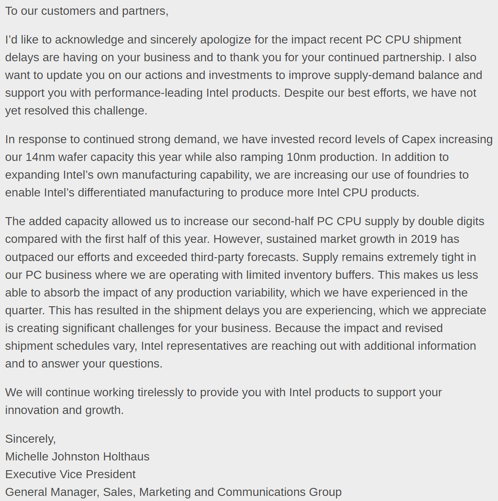
5.Intel ‘sincerely apologizes’ to customers for lingering CPU shortage (PC Gamer 2019-11-21)
Intel is still not producing enough 14-nanometer processors to meet demand, many of which are on our list of the best CPUs for gaming, and in a rare move, the company issued an apology to customers for coming up short. At the same time, Intel says it has “not yet resolved this challenge,” so expect the shortage to continue.
“I’d like to acknowledge and sincerely apologize for the impact recent PC CPU shipment delays are having on your business and to thank you for your continued partnership,” Michelle Johnston Holthaus, executive vice president and general manager of sales, marketing, and communications at Intel, wrote in an open letter.
…………
In other words, Intel expects to continue falling short of demand, though for how long is unclear. It also means we may not see as many Black Friday deals on Intel CPUs as usual, but that’s often the case. AMD CPU deals, on the other hand, could be great if it’s anything like past years.
…………
6.Intel chip shortage is pulling down PC makers’ revenue expectations (CNBC 2019-11-27)
PC makers are pointing at Intel as they tell Wall Street to expect lower revenue. Intel shares fell as much as 1.7% on Wednesday morning after both Dell and HP called out the chipmaker by name in earnings reports Tuesday evening.
…………
Supply issues have hit Intel for a few months at a time in the past 30 years or so, but the current episode has been going on for a year or more, analyst Patrick Moorhead of Moor Insights & Strategy told CNBC in an interview on Tuesday. Supply is the biggest challenge Intel faces in the short term, he said.
…………
Last week, though, Intel told customers that it was running short on PC processors.
“Despite our best efforts, we have not yet resolved this challenge,” Michelle Johnston Holthaus, executive vice president of Intel’s sales, marketing and communications group, wrote in a letter.
Market Trends
1.Decline in Q4 DRAM Contract Prices Lessens as Buying Momentum Recovers（TrendForce 2019-11-11)
According to the latest analysis from the DRAMeXchange research division of TrendForce, Q4 DRAM ASP is as of yet undergoing a slight QoQ decline, but this decline has shrunk down to 5%. In contrast, the total trading volume in October has seen considerable QoQ growth, which demonstrates an increased willingness to pay on the purchasers’ part. Once suppliers’ inventory levels have sufficiently lowered, they will no longer need to cut prices to encourage further sales. These factors have the potential to help DRAM prices stabilize and recover in 2020.
…………
In relation to the continuing development of the Chinese DRAM industry, we hold a conservative outlook toward its initial production capacity planning, despite the year-end mass production announced by Hefei-based CXMT. Furthermore, the Chinese DRAM industry needs time to acclimatize itself to the learning curve involved in optimizing production. As a result, Chinese vendors will not significantly contribute to the global bit supply in 2020.
…………
TrendForce believes that the current pricing trajectory of spot markets is well within the projected range. If contract prices remain stable, and the demand side manages to avoid drastic cuts, then the stagnant spot price trajectory in the short term will have no impact on the development of DRAM market in the foreseeable future.
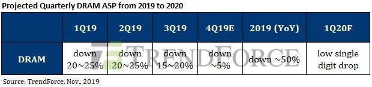
买方采购力道回温，第四季合约价跌幅明显收敛（TrendForce 2019-11-11)
根据集邦咨询半导体研究中心(DRAMeXchange)最新调查，第四季DRAM均价相较前一季仍小幅下跌，但跌幅已缩小至约5%。10月交易量与先前季度的首月相比明显放大，显示买方购货的意愿逐渐增强。一旦供给商的库存降低，降价求售的必要性便大幅下降，有助于2020年DRAM价格的止稳反弹。
…………
在中国DRAM产业发展上，虽然合肥长鑫已宣布将于年底正式导入量产，但初期产能规划仍非常保守，预估真正放量最快也要到明年年末，且中国DRAM产业整体良率提升需要一段时间的学习曲线，对于2020年整体DRAM产业的位元供给成长贡献有限。
…………
相较于合约市场，现货市场的动能显得疲弱许多。由于现在现货市场的交易量已经大幅萎缩，因此价格容易因市场面消息出现剧烈震荡，例如七月中受到日韩贸易战事件影响所造成的连日飙涨。然而，在日本核准并且开放化学原物料进口至韩国后，DRAM供货疑虑消失，现货价格便呈现每日小跌的态势，在十月下旬已经跌破七月飙涨前的新低点。
集邦咨询认为，目前的现货价格走势都还在预期范围内，只要合约价格走势平稳，需求端也未见重大下修，短期现货价格偏弱的走势并不会对后续整体市况造成影响。
2.Demand for Preemptive 3Q19 DRAM Shipment Rises, Pushing Global DRAM Revenue Up by 4% (TrendForce 2019-11-18)
According to the DRAMeXchange research division of TrendForce, demand-side inventory in 2H19 has returned to relatively healthy levels. Furthermore, some vendors pulled their quarterly product shipment forward in an effort to avoid potential negative impacts from Trump’s impending tariffs; this shift skyrocketed DRAM suppliers’ sales bits in 3Q19, driving total DRAM revenue up by 4% and ending the QoQ decline which lasted over three consecutive quarters. Despite an already strong-performing base period in 3Q19, the three major DRAM manufacturers are projected to increase their shipments even further in 4Q19, propelled by demands from the server and smartphone markets.
Regarding the performance of 3Q19 revenues, Samsung increased its sales bits by 30% and quarterly revenue by 5% QoQ to $7.12 billion because Chinese smartphone vendors aggressively pulled their quarterly shipment forward and because demand in the server market has gradually recovered. Likewise, SK Hynix grew its sales bits by 20% and quarterly revenue by 3.5% to $4.41 billion. On the other hand, because of Micron’s relatively weaker base period in 2Q19, it increased its sales bits by almost 30%, and its revenue reached $3.07 billion. However, Micron’s market share dropped below 20%. TrendForce believes that Micron’s lack of greenfield fabs – and the corresponding lack of wafer inputs – will lead to a continued reduction in market shares.
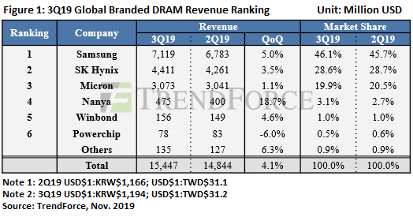
第三季DRAM提前备货需求大增，带动产值季成长4% (TrendForce 2019-11-18)
根据集邦咨询半导体研究中心(DRAMeXchange)调查显示，2019年下半年DRAM需求端的库存已回到较健康的水位，加上部分业者为避免日后可能加征关税带来的负面冲击，在第三季提前备货，带动DRAM供应商第三季的销售位元出货量(sales bit)大增，连带推升DRAM总产值成长4%，结束连续三季下滑。展望第四季，尽管第三季基期已高，三大DRAM原厂仍预期在服务器及手机需求的带动下，出货量有望维持成长。
观察各厂第三季营收表现，三星受惠于中国手机业者提前备货力道强劲，以及服务器需求缓步回温，销售位元出货量成长逾3成，带动营收较第二季成长5%，来到71.2亿美元；SK海力士的销售位元出货量成长约2成，营收季增3.5%，来到44.1亿美元。至于美光由于第二季基期较低，第三季位元出货成长近3成，营收为30.7亿美元，但市占率失守两成大关。集邦咨询认为，美光因缺乏新厂(greenfield)增加投片，可能导致市占持续受到压缩。
尽管第三季出货量走扬，但受到整体产业价格下跌近2成的影响，DRAM供应商的营业利益率呈现衰退。三星的营业利益率由前一季的41%下滑至33%，已接近公司中长期低标30%的门槛，集邦咨询认为三星接下来继续调降价格的意愿将十分有限。而SK海力士因第三季转换部分服务器存储器产能至行动式存储器，成本优化(cost reduction)较为明显，加上第二季基期低，第三季营业利益率从28%小幅下滑至24%。
…………
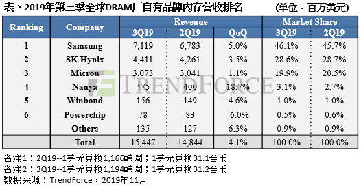
3.集邦咨询2020存储产业趋势峰会圆满落幕！ (TrendForce 2019-11-28)
2019年11月27日，由全球高科技产业市场研究机构集邦咨询（TrendForce）旗下半导体产业研究中心DRAMeXchange主办的“2020存储产业趋势峰会（MTS2020）”在深圳盛大举行。本次峰会汇聚全球半导体及存储产业链重量级嘉宾以及集邦咨询内存和闪存核心分析师，与来自产业链上下游企业的数百名参会嘉宾共同探讨2020年存储市场新趋势、新变化。
本峰会围绕半导体及存储产业发展趋势，详细解读全球半导体存储产业宏观经济环境、产业细分市场以及技术演变动态，深度分析未来的驱动因素和应用商机，为产业及企业同步提供前瞻性、战略性规划参考，大会现场人气爆满、座无虚席。
会议伊始，集邦科技董事长刘炯朗为大会做开幕致辞，对所有参会嘉宾的莅临表示感谢。紧接着，集邦咨询半导体产业研究中心DRAMeXchange与拓墣产业研究院的半导体及存储产业各细分领域分析师、行业专家等展开精彩演讲，下面整理了各演讲嘉宾演讲的主要内容，以飨读者：
余大年：存储在电子竞技产业链中的应用
叶茂盛：2020年智能手机发展与存储市场趋势分析
徐征：消费类市场内存需求分析
吴元雄：存储技术与解决方案发展
刘家豪：IT基础架构转型驱动内存市场新纪元
…………
4.DRAMeXchange郭祚荣：预估内存价格明年Q2开始上涨 (全球半导体观察 2019-11-29)
…………
供给端方面，郭祚荣分析认为全球2020年内存市场的年成长预估仅为12.2%，这个数字在年成长动辄25%、甚至40%-50%的传统内存产业是非常低的。三星、SK海力士、美光等内存厂商明年获利为主要目标，资本支出也会减少。
具体而言，在标准型内存、服务器内存、行动式内存、绘图用内存、利基型内存这5大类产品中，明年份额比重最大的是行动式内存，占比约39.7%，主要因为智能手机本身需求量大，加上明年5G的兴起将带来强劲的换机潮；其次为服务器内存、占比约为34.9%，郭祚荣指出，服务器内存的份额比重每年逐步上升，未来3-5年服务器内存的份额比重可能会超过行动式内存，成为全部内存产品份额比重最高的产品。
其他产品类别的份额比重情况，PC方面（标准型内存）在逐年下降，虽然游戏电脑的需求在提升，但占比不高；绘图用内存目前需求还可以，预估明年状况会很好；利基型内存方面，每年的增长大概是7%-8%。
…………
具体而言，全球2020年内存需求达17.5%，其中智能手机和服务器的需求比重最大，无论是今年或是明年，两者需求比重总和都占据了总需求七成左右份额，其他如PC比重将越来越低，利基市场大概每年维持差不多的比重。
……………
Vendor News
1.紫光集团任命坂本幸雄为高级副总裁兼日本分公司CEO (紫光集团 2019-11-18)
2019年11月15日，紫光集团宣布：任命坂本幸雄（Yukio Sakamoto）为紫光集团高级副总裁兼日本分公司CEO。紫光集团目前是中国大型集成电路领军企业，坂本幸雄将借助紫光集团的整体优势，负责拓展紫光在日本市场的业务。
紫光集团董事长兼CEO赵伟国表示：“对于以创新驱动快速发展的紫光集团来说，人才建设尤为重要。坂本幸雄这样世界级人才的加入无疑将增强紫光集团的创新实力。希望有更多优秀的人才能够参与到紫光的发展大业中来。”赵伟国同时强调，“坂本幸雄的到来也是紫光全球发展本地化战略的体现，我们希望紫光在全球各地的分公司，充分利用本地的人才，更好地服务本地的客户，并为本地市场的发展做出贡献。”
坂本幸雄表示：“我非常荣幸加入紫光集团，紫光集团近年来的迅猛发展，以及形成的产业优势是可以一展身手的大舞台。我将利用自己过往在专业领域的经验，结合紫光的发展战略，全力拓展日本市场，并助力紫光的全球化发展。”
坂本幸雄先生在DRAM领域具有30余年的从业经验，在技术以及战略发展上拥有优秀的领导力。坂本幸雄先生曾任日本德州仪器副社长、神户制钢电子信息科半导体部门总监理、联日半导体社长兼代表董事，及尔必达存储社长、代表董事兼CEO。
2.Japan chip industry heavyweight joins China’s Unigroup (NIKKEI ASIAN REVIEW 2019-11-16)
Tsinghua Unigroup, one of China’s leading chipmakers, has hired Japanese semiconductor industry veteran Yukio Sakamoto as a senior vice president and also head of the company’s Japan unit.
Sakamoto, 72, served as chief executive of once-leading Japanese chipmaker Elpida Memory, which was established by combining the memory chip units of NEC and Hitachi.
Sakamoto led Elpida for over a decade, from 2002 to 2013, successfully listing the company’s shares on the first section of the Tokyo Stock Exchange in 2004. But the financial crisis and falling chip prices hurt the company’s finances, eventually leading to its bankruptcy in 2012 and its acquisition by U.S. peer Micron Technology the following year.
Besides Sakamoto’s experience, the Chinese government-backed Unigroup likely aims to put his connections in Japan and beyond to work as it expands its reach.
…………
3.紫光日本公司CEO：DRAM内存将在5年内量产 (全球半导体观察 2019-11-29)
近日，紫光集团新任高级副总裁兼日本分公司CEO坂本幸雄在接受日本媒体采访时表示，紫光的目标是5年内量产DRAM内存。
坂本幸雄透露，紫光集团将在日本神奈川县川崎设立“开发中心”，预计会招聘70-100位工程师，与中国的制程工艺团队配合，花2-3年构建出可以量产的内存技术，而自己的工作就是协助公司达成目标。
资料显示，紫光集团于今年6月底正式进军DRAM产业，并发文公告组建DRAM事业群，事业群董事长由曾任工信部电子信息司司长的刁石京担任，而CEO则由高启全担任。
随后，紫光集团与重庆市政府签署了存储芯片产业基地项目合作协议。根据协议，紫光集团将在重庆两江新区发起设立紫光国芯集成电路股份有限公司和重庆紫光集成电路产业基金，建设DRAM总部研发中心、紫光DRAM事业群总部、DRAM存储芯片制造工厂、紫光科技园等。紫光重庆DRAM存储芯片制造工厂计划于2019年底开工建设，预计2021年建成投产。
…………
4.Highlights of the day: Chinese DRAM firm CXMT ramps up 19nm production (DigiTimes 2019-11-13)
China’s bid to increase semiconductor self-sufficiency will take a step further - albeit a small one, perhaps - as homegrown DRAM maker CXMT is ramping up 19nm production. CXMT’s goal is to reach an output of 40,000 wafers monthly for the 19nm process by mid 2020. While many Taiwan-based firms are moving some of their production lines out of China, others are still increasing their investments there, including Nan Ya PCB. The Taiwan-based maker have disclosed it will invest another US$48 million in its plant in Kunshan to expand production capacity for ABF substrates, which have seen significant demand from the 5G networking chip segment. In the IT supply chain, servers remain promising. Inventec expects a significant rise in revenues from the server segment in 2020 when worldwide server shipments rebound.
Chinese DRAM maker CXMT ramping 19nm process output: China-based DRAM chipmaker ChangXin Memory Technologies (CXMT, formerly Innotron**) has managed to improve its 19nm process manufacturing yield rates to satisfactory levels, and is ramping up the process output with a goal of reaching 40,000 wafers monthly by the middle of 2020, according to industry sources.**
…………
5.Memory chip output zooms from zero to 5% of world total (NIKKEI ASIAN REVIEW 2019-11-20)
Beijing’s push for technological self-sufficiency is on the verge of a major breakthrough with the country’s nascent chip industry on track to produce around 5% of the world’s memory chips by the end of 2020 from virtually zero last year, sources familiar with the matter told Nikkei Asian Review.
Beijing, which has made artificial intelligence a strategic priority, has pumped billions of dollars into building out a viable semiconductor industry from scratch over the past few years. The initiative has gained extra urgency following Washington’s ban on China using certain U.S. technologies, such as memory chips that can be used in military and security equipment.
Yangtze Memory Technologies Co., which makes NAND flash memory chips, expects to triple production to 60,000 wafers a month, or 5% of world output, by the end of next year at its new $24 billion plant in Wuhan, which began construction in 2016. ChangXin Memory Technologies meanwhile expects to quadruple production of DRAM chips to 40,000 wafers a month, or 3% of world DRAM output, at its $8 billion facility in Hefei.
…………
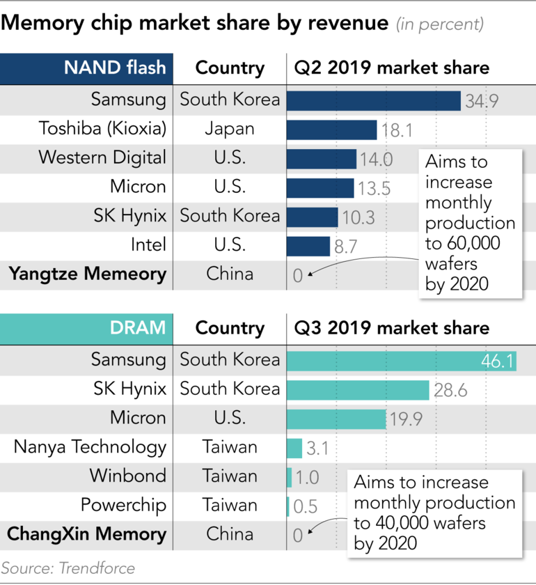
6.合肥长鑫 联想thinkcentre支持国产第一个8G DDR4 内存 (guancha 2019-11-27)
一台黝黑的联想Thinkcentre正在静静的运行，与它连接的屏幕上正在播放着世界集成电路的发展史。尽管外表普通，但如果打开它的机盖，你会发现，在它的内部，拥有一个此前从未在全世界电脑里出现的内存Logo——CXMT(长鑫存储)。
…………
今年9月，长鑫存储内存芯片自主制造项目宣布投产，与国际主流DRAM产品同步的10纳米级第一代8Gb DDR4首度亮相，一期设计产能为每月12万片晶圆。这标志着我国在内存芯片领域实现量产技术突破，并拥有了这一关键战略性元器件的自主产能。
“长鑫将分三期建设三座12英寸DRAM存储器晶圆厂，预计三期满产后产能可达到每个月36万片。”长鑫存储董事长兼首席执行官朱一明称。
长鑫存储也成为了中国第一家自主研发并投入量产的DRAM设计制造一体化企业，并实现了中国在这一领域的历史性突破。与此同时，总投资超过2200亿元的合肥长鑫集成电路制造基地项目顺利签约，包括总投资1500亿元的长鑫12英寸存储器晶圆制造基地、总投资超过200亿元的空港集成电路配套产业园和总投资500亿元的合肥空港国际小镇三个片区。
…………
7.Samsung Estimates Millions Of Dollar In Damage After Contamination At Manufacturing Plant (Tech Critter 2019-11-11)
Chemical contamination that was found at one of Samsung Electronics’ manufacturing plant few weeks ago has impacted the production of Samsung memory products. According to Business Korea, the cause of the contamination has been identified on an 8-inch wafer line that is used for 1x nm-class DRAM production.
Officials at Samsung Electronics have acknowledged the problem and claimed that the matter has already been taken care of. While Samsung estimated the damage to be billions of Korean won (millions of dollars), some experts say that the damage could be far more than what the company has estimated.
Defects caused by contamination in semiconductor manufacturing can be pretty disastrous and the clean-up cost is never cheap, just like the contamination happened at TSMC earlier this year which caused a whopping $550 million loss in revenue. Samsung is definitely taking a heavy blow from this incident but let’s hope that there won’t be any radical price increase in memory products anytime soon.
8.Samsung hits 2-year high DRAM market share in Q3, bumps up revenue (Sammobile 2019-11-29)
Although overall sales in the DRAM market have declined – particularly in the first half of the year – and Samsung Electronics could lose its top spot in the semiconductor business to Intel by the end of 2019, the company still managed to increase its DRAM market share throughout Q3 2019, according to a recent report by The Korea Herald citing DRAMeXchange.
The so-called NAND flash and DRAM boom ended a few quarters ago and sales continued to drop, putting Samsung, the world’s largest DRAM manufacturer, in a difficult position. But interestingly enough, DRAMeXchange claims that overall DRAM revenues have stopped declining throughout the July-September period, and apparently, Samsung managed to increase revenue by 5%.
Samsung’s DRAM market share hits a 2-year high
Not only was Samsung able to see a bump in revenue, but the company also hit a 2-year high in DRAM market share, accounting for 46.1% of shipments, claims the report. The source attributes Samsung’s success to relatively high demand from Chinese smartphone manufacturers and server clients.
…………
9.Micron Technology: Demonstrating DRAM Technology Leadership (Seeking Alpha 2019-11-26)
Summary
Micron has enhanced its DRAM technology to the point that at the end of September, it is the only company producing at the most advanced 1z nm node.
In 2020, Micron will dominate with 28% of bit shipments at the 1z nm node, more than twice that of Samsung Electronics.
Also, in 2020, Micron will be the only company in the production of DRAMs at the even more advanced 1α nm node.
The benefits of moving to advanced nodes are lower costs, higher performance, lower power consumption, and longer battery life in smartphones.
…………
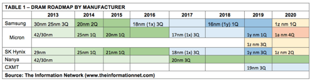
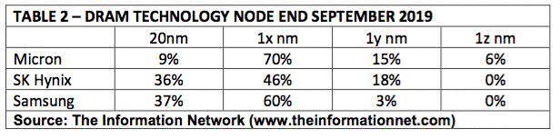
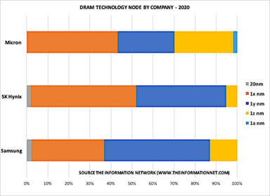
New Technology
1.泛读存储: 子曰, I like GenZ (SSD Fans 2019-11-24)
传统的架构，网络中服务器各自为政，每个人都有自己的一亩三分地，都要有自己的CPU，Memory和存储。
然而，这个架构已经有点要崩了：
磁盘（SSD）的性能越来越强；
越来越多的Core；
DDR速率和Channel数量的提高
PCIe速度越来越高，Lane越来越多
导致，每个Core的memory容量越来越高，IO和Memory带宽却越来越低，Memory的时延也越来越高。
存储与Memory的不断融合，Memory运算的效率变得越来越重要
子曾今曰过：独乐乐不如众乐乐，他的意思其实是让大家不要把Memory都留着自己用，而是拿出来大家分享。子心中理想的架构是下面左图。
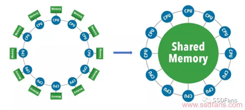
而实现子心中理想的关键，就是GenZ：
士农工商，贩夫走卒，大家都通过GenZ使用共享的Memory资源。
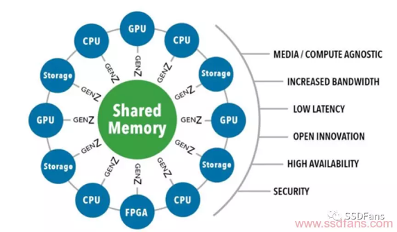
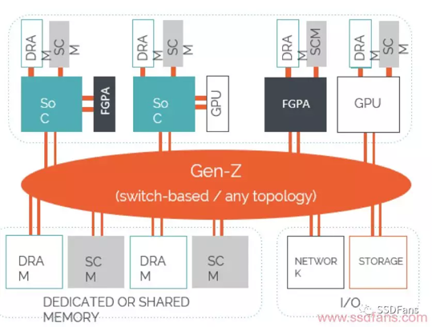
…………